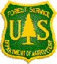
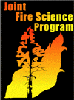
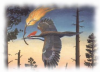

|
About BehavePlus |
Funding for the development of BehavePlus and supporting material was provided by:
|  | USDA Forest Service Fire and Aviation Management Washington Office http://www.fs.fed.us/fire |
| USDA Forest Service Rocky Mountain Research Station Missoula Fire Sciences Laboratory Missoula, MT http://www.firelab.org |
|
|  | Joint Fire Science Program http://www.firescience.gov |
|  | Systems for Environmental Management Missoula, MT http://www.fire.org |
BehavePlus was completed under contract between
BehavePlus is maintained by
BehavePlus was designed and developed by
Current information about the BehavePlus Fire Modeling System can be found on www.frames.gov/behaveplus where you can download the latest version of the program and documentation. Training and a list of frequently asked questions (FAQs) are also available on the website.
BehavePlus is a large, complex program, and problems such as bugs and crashes will inevitably occur. If you discover bugs in BehavePlus or if the program crashes or freezes up, please take the following steps:
Because BehavePlus is licensed free of charge, there is no warranty for the program, to the extent permitted by applicable law. Except when otherwise stated in writing the copyright holders and/or other parties provide the program "as is" without warranty of any kind, either expressed or implied, including, but not limited to, the implied warranties of merchantability and fitness for a particular purpose. The entire risk as to the quality and performance of the program is with you. Should the program prove defective, you assume the cost of all necessary servicing, repair, or correction.
In no event unless required by applicable law or agreed to in writing will any copyright holder, or any other party who may modify and/or redistribute the program as permitted above, be liable to you for damages, including any general, special, incidental, or consequential damages arising out of the use or inability to use the program (including, but not limited to loss of data or data being rendered inaccurate or losses sustained by you or third parties or a failure of the program to operate with any other programs), even if such holder or party has been advised of the possibility of such damages.
Monte Dolack is a nationally recognized artist from Missoula, MT, whose artwork decorates the pages of BehavePlus. We are pleased to show details of some of Monte's work in an attempt to partially relieve the visual tediousness of the modern windows-style GUI. Monte has gained national recognition for his poster designs, which often contain allusions to environmental concerns. He paints in acrylics, oils, and watercolors, and also works in traditional printmaking techniques. Monte's posters and note cards may be viewed and ordered via his website at www.dolack.com.